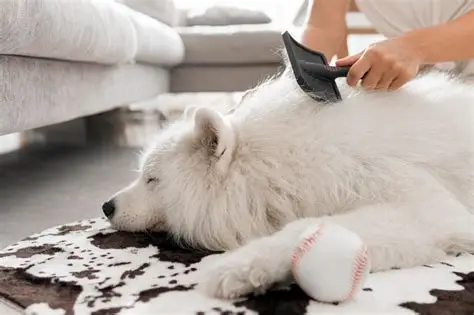

Guía para principiantes: Cómo cepillar a tu perro correctamente en casa
Cepillar a tu perro en casa es una de las mejores formas de mantener su pelaje saludable y, al mismo tiempo, fortalecer el vínculo con él. Pero, ¿estás usando la herramienta correcta? ¿Y la técnica adecuada?
Un buen cepillado hace más que solo quitar pelo suelto: distribuye los aceites naturales de la piel, previene la formación de nudos dolorosos y te permite revisar si tiene pulgas, garrapatas o irritaciones.
Como tus groomers de confianza, queremos darte los secretos para hacerlo bien
Elige el Cepillo Correcto (No todos son iguales)
Nuestros groomers son expertos en revisar cada centímetro de tu mascota. Durante el baño y secado, podemos detectar bultos, heridas, sarpullidos, irritaciones en la piel, o los primeros signos de pulgas y garrapatas que podrías pasar por alto fácilmente en casa.
2. Cuidado Específico del Pelaje y la Piel
Usar el cepillo incorrecto puede ser inútil en el mejor de los casos, o doloroso en el peor. Aquí tienes una guía rápida:
- Para Pelo Corto (Beagle, Pug, Bóxer): Un guante de goma o un cepillo de cerdas suaves es perfecto. Masajea la piel y atrapa el pelo suelto y muerto, dejando un pelaje brillante.
- Para Pelo Medio o Doble Capa (Golden, Pastor Alemán, Husky): Necesitas un Rastrillo (Undercoat Rake). Esta herramienta penetra la capa superior y saca el sub-pelo muerto (la "borra") que causa calor y la mayor parte de la caída de pelo en casa.
- Para Pelo Rizado o Largo (Poodle, Shih Tzu, Schnauzer): Una Carda (Slicker Brush) es tu mejor aliada. Sus finas púas metálicas son geniales para deshacer pequeños nudos y evitar que se formen.
- La Herramienta Universal: Un Peine Metálico. Úsalo *después* de cepillar para hacer un "control de calidad". Si el peine pasa suavemente por todo el pelaje, ¡has hecho un gran trabajo! Si se atasca, aún queda un nudo por deshacer.
La Técnica Correcta: Guía Paso a Paso
- Crea un Ambiente Tranquilo: No lo hagas cuando el perro esté hiperactivo. Busca un momento de calma, ten premios a la mano y habla con voz suave.
- Cepilla en la Dirección del Pelo: Nunca cepilles a contrapelo, ya que puede ser muy molesto y tirar de la piel. Ve siempre en la dirección en que crece el pelaje.
- Trabaja por Secciones: No intentes cepillarlo todo de una sola vez. Empieza por el lomo, luego baja por los costados, el pecho, las patas y, con mucho cuidado, la cola y las orejas.
- ¿Encontraste un Nudo? ¡No tires!: Este es el error más común. Si tiras, le causarás dolor. Sujeta el pelaje en la base (cerca de la piel) con tus dedos para evitar el tirón, y luego usa la carda o el peine para deshacer el nudo suavemente, trabajando desde la punta del nudo hacia la raíz.
¿Qué hago si encuentro un nudo muy grande o pegado a la piel?
¡NO USES TIJERAS! Es increíblemente fácil cortar accidentalmente la piel de tu perro, especialmente si el nudo está muy apretado (lo que se conoce como "pelo apelmazado" o mat). Esas heridas suelen ser graves y requieren visitas al veterinario.
Si el nudo es muy grande o está muy pegado, es un trabajo para un profesional. Forzarlo es doloroso. En Betty Pet Grooming tenemos las herramientas y la técnica para removerlo de forma segura.
Tu Tarea: Mantenimiento. Nuestro Trabajo: La Magia.
El cepillado regular en casa es la mejor forma de mantener a tu perro cómodo y libre de nudos entre visitas.
Y cuando sea el momento de un deslanado profundo, un baño profesional o un corte para dejarlo perfecto, ¡nuestro equipo está aquí para ayudarte! Agenda tu cita con nosotros.